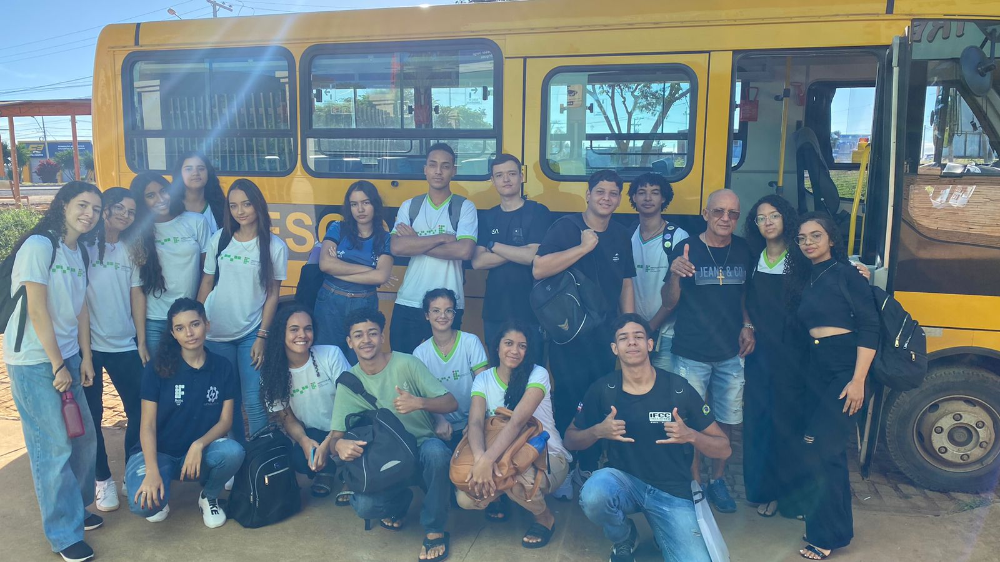

A cidade de Uibaí dispõe de dois veículos, porque um só não deu conta do crescente número de alunos do Cetep, tinha gente saindo de tudo quanto é buraco. Um dos ônibus parte do centro de Uibaí, e o segundo tem origem em Hidrolândia e costuma chegar um pouco mais tarde.
No período vespertino, apenas um ônibus é oferecido, com partida diretamente da portaria do IFBA.

Horários
Matutino:
6:20h Saída do local de partida
12:10h Saída da portaria IFBA.
Vespertino:
17:00h Saída da portaria IFBA